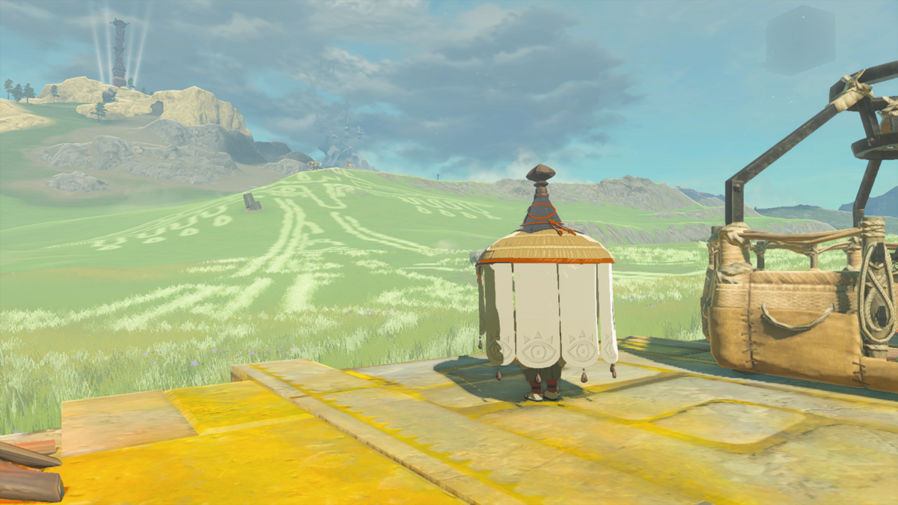

图：游戏实机截图（龙之泪：发光的蓝色泪滴，图片来源：Zelda Wiki，本站自托管图片）。
适用人群与前置条件
这篇写给三类玩家：一是想补完剧情、弄清塞尔达去了哪里的玩家；二是卡在“还差几滴泪”、不知道剩下的地上绘藏在哪的玩家；三是想早点拿到大师剑线索、却不想在全地图上瞎转的玩家。前置条件只有一个：先完成“英帕与地上绘”——在新塞雷恩马厩附近见到英帕，乘她的热气球升空，看清第一幅地上绘，任务线才会正式展开。完成之后再去遗忘神殿，英帕会指引你看神殿墙上的地上绘地图，那张地图是本篇之外最重要的找泪工具。
怎么找：一幅地上绘，一滴实心的泪
地上绘是刻在地面上的巨型图案，在地面上走根本看不出全貌，必须从高空往下看。最稳的办法是鸟望塔弹射升空后滑翔：飞到目标区域上空，图案会先以浅色线条浮现在地面上，再慢慢降高度确认细节。每一幅地上绘里都散落着许多水滴形图案，其中只有一个是实心的、发着光的，那就是龙之泪；其余空心的水滴只是图案的一部分，调查了也不会触发记忆。落到实心泪滴旁按调查，就能播放一段记忆，冒险日志里同时记上一笔。
收集顺序完全自由，11幅可以按任何顺序拿；但记忆本身是按剧情时间编排的，拿到手的顺序和剧情顺序并不一致——如果你在意剧情连贯，先按本篇表格里的记忆编号从小往大看一遍，再按自己的路线去实地收集，会比东一幅西一幅更顺。还有一个关键点：看完第一幅之后，一定要去一趟遗忘神殿，墙上的地图会把全部地上绘的位置都标出来，之后就不用再凭感觉找了。

图：游戏实机截图（英帕乘热气球观察地上绘，远处山坡上就是一幅地上绘，图片来源：Zelda Wiki，本站自托管图片）。
11幅地上绘＋第12滴泪：位置、坐标与泪滴落点
下表按记忆编号排列，坐标是游戏内坐标的约数：不同来源的实测值会有几十的偏差，实地以图形本身和实心泪滴为准，不要死磕最后一位数字。找的时候先飞到对应区域上空认图案，再按“泪滴落点”那一栏落点。
| 地上绘与记忆 | 区域与出发点 | 泪滴坐标（约） | 泪滴落点 |
|---|---|---|---|
| 拉鲁像：我在哪？ | 北海拉鲁平原，新塞雷恩马厩附近 | -1413, 0967, 0124 | 拉鲁左眼 |
| 城堡：不熟悉的世界 | 塔邦挞丘陵，利特村以东 | -2551, 1888, 0319 | 正门上方中央 |
| 普尔亚平板：米涅鲁的忠告 | 尔丁峡谷南侧，尔丁峡谷鸟望塔以南 | 1826, 0738, 0089 | 图案正中央 |
| 莫尔德拉吉克形：格鲁德的袭击 | 巴特利亚湖一带，西尼克尔达 | 0697, -1308, 0053 | 尾部与身体相接处的树丛 |
| 跪拜的加侬多夫：宣誓效忠 | 格鲁德高地，萨菲亚桌一带 | -3176, -1700, 0419 | 肩部上方中央 |
| 索尼娅王后：塞尔达与索尼娅 | 伊鲁美尼高原，海拉鲁山脊 | -3089, -0075, 0211 | 中部圆环下方 |
| 弯刀：索尼娅遭背叛 | 戈戈比海岸，南尼克尔达 | 3322, -3567, 0005 | 刀柄右侧 |
| 魔王：魔王诞生 | 北塔邦挞雪原，皮基达石林塔东北 | -1863, 3620, 0237 | 左侧，手臂上方 |
| 秘石：贤者们的誓言 | 塔鲁斯高原，拉聂尔地区 | 4468, -0304, 0075 | 右侧中央 |
| 纪念碑：王的职责 | 法隆草原西北，海利亚湖以西 | -0649, -2683, 0068 | 左侧中央 |
| 大师剑：跨越时空的大师剑 | 尔丁山脉东侧悬崖 | 0891, 2953, 0362 | 剑尖处 |
| 第12滴：龙之泪 | 里斯特半岛螺旋中心，杰米米克神庙旁 | 4534, 2143, 0000 | 集齐11滴后地图自动标记，前往中心即可 |
第12滴没有对应的地上绘，它只在集齐前面11滴之后才出现：地图上会自动标出位置，地点在阿卡莱地区东北角的里斯特半岛，走进那片螺旋形的地块、到中心就能找到。没集齐之前跑过去是找不到的，先数冒险日志，确认11段记忆都已解锁再去。
收集路线：顺路扫比分头跑省一半时间
作者视角的路线建议是按区域成组扫，而不是按记忆编号满地图折返：一组是西北线——利特村的城堡、北雪原的魔王与北海拉鲁平原的拉鲁像三幅可以一次跑完；一组是西南线——格鲁德高地的跪拜的加侬多夫与海拉鲁山脊的索尼娅王后两幅离得近，顺路一起拿；一组是东南线——巴特利亚湖的莫尔德拉吉克形、戈戈比海岸的弯刀与法隆草原的纪念碑三幅，沿尼克尔达与法隆走；最后是东北线——拉聂尔的秘石、尔丁的普尔亚平板与大师剑三幅加第12滴收尾。每组出发前先开附近的鸟望塔，塔弹射＋滑翔是最省精力的找绘方式，骑马在地面上找纯属浪费时间。
赶时间的玩家有一条捷径：直奔第11幅大师剑的记忆，它直接点出了大师剑的下落——大师剑在光之龙头上，详见本站大师剑完全指南。但这条捷径的代价是剧透：大师剑记忆是整个剧情线最大的转折之一，想自己慢慢拼剧情的玩家，千万别先看这一幅。主线推进的通用顺序见本站主线任务完全指南，地上绘收集本身不依赖主线进度，任何时候都能做。
四个最常见的翻车点
哈里的取舍：先扫绘，还是先推主线
作者视角的判断是：地上绘值得在主线中期就开始扫，因为它同时解决两个问题——补完剧情，和提前拿到大师剑的下落线索。主线后期再回头扫，剧情冲击力还在，但大师剑线索的实用价值就打了折：早知道剑在光之龙头上，就能早规划体力与飞行路线。反过来，完全不看攻略、只凭剧情自然撞见地上绘的体验也很好，只是要做好“最后一两幅找半天”的准备。折中的做法是：按本篇的区域分组扫三组，留大师剑那幅到主线推进到一定程度再看——既不瞎转，也保住了最大的剧情转折。
一句话总结：11幅地上绘各藏一滴实心的泪，塔上天、认实心滴、按区域成组扫，集齐后去里斯特半岛拿第12滴——剧情线就此补完，大师剑的下落也就清楚了。